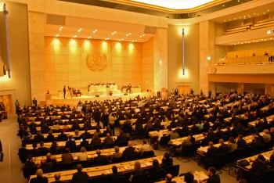

Home / News & Events / Event Archives / Global Compact Leaders Summit 2007
NEW: Click here to download the final report from the 2007 Global Compact Leaders Summit.
Official 2007 Leaders Summit Website.
The second UN Global Compact Leaders Summit took place on 5-6 July 2007 at UN Headquarters in Geneva, Switzerland. The Summit, co-chaired by the UN Secretary-General Ban Ki-moon, gathered over 1000 chief executive officers, government ministers, heads of civil society and labour organizations from all over the world - making the Summit the largest event ever convened by the UN on the topic of corporate citizenship.
UN Secretary-General Ban Ki-moon officially opened the 2007 Global Compact Leaders Summit (Global Compact/Guaresi).
As the two-day conference closed, the participants adopted the 21-point Geneva Declaration, which spells out concrete actions for business, governments and United Nations Global Compact participants. The Geneva Declaration expresses the belief that “globalization, if rooted in universal principles, has the power to improve our world fundamentally -- delivering economic and social benefits to people, communities and markets everywhere”.

The General-Assemply Hall at the UN Headquarter in Geneva (Global Compact/Guaresi).
Speeches |
New initiatives |
Reports and MaterialTo access all studies, reports and publications that were launched during the Summit, please visit our "Tools and Publications" page. 2007 Global Compact Leaders Summit Final Meeting Report Global Compact Leaders Summit Programme Click here to view the video archive of the Leaders Summit. Click here to visit the official Summit blog. The Geneva Declaration (Russian). Ministerial Statement on the Role of Governments. 2004 Leaders Summit Final Report. Key Studies2007 Global Compact Annual Review Introducing GS Sustain (Goldman Sachs Group Inc) Shaping the New Rules of Competition - UN Global Compact Participant Mirror (McKinsey & Company) |
For more information about the 2007 Leaders Summit, please visit the official 2007 Global Compact Leaders Summit website.
For more information contact
(Last update 22 October 2007)